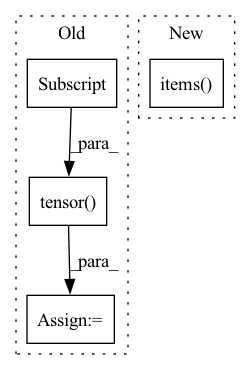

Pattern ID :36428
Before Change
continue
assert conf["positions"].attrs["units"] == "Å"
pos = pt.tensor(conf["positions"] , dtype=pt.float32)
assert pos.shape == (z.shape[0], 3)
assert conf["formation_energy"].attrs["units"] == "eV"
y = pt.tensor(conf["formation_energy"][()], dtype=pt.float64)After Change
load_confs = None
if version == "1.0":
assert "name" in h5.attrs
mols = h5.items()
load_confs = self._load_confs_1_0
elif version == "2.0":
assert len(h5.keys()) == 1
mols = list(h5.values())[0].items()In pattern: SUPERPATTERN
Frequency: 3
Non-data size: 4
Instances Fragment ID: 103007491
Project Name: torchmd/torchmd-net
Commit Name: d23e6500f2cef1fa56d6c99ce5fdb983f1379bca
Time: 2022-10-28
Author: peastman@stanford.edu
File Name: torchmdnet/datasets/ace.py
M Class Name: Ace
N Class Name: Ace
M Method Name: sample_iter(2)
N Method Name: sample_iter(1)
M Parent Class: Dataset
N Parent Class: Dataset
M File Name: torchmdnet/datasets/ace.py
N File Name: torchmdnet/datasets/ace.py
M Start Line: 72
M End Line: 123
N Start Line: 144
N End Line: 206
Before Change
def sample_iter(self):
for path in tqdm(self.raw_paths, desc="Files"):
molecules = list(h5py.File(path).values())
for mol in tqdm(molecules, desc="Molecules", leave=False):
z = pt.tensor(mol["atomic_numbers"], dtype=pt.long)
fq = pt.tensor(mol["formal_charges"], dtype=pt.long)
q = fq.sum()
for conf in mol["conformations"].values():
// Skip failed calculations
if "formation_energy" not in conf:
continue
assert conf["positions"].attrs["units"] == "Å"
pos = pt.tensor(conf["positions"], dtype=pt.float32)
assert pos.shape == (z.shape[0], 3)
assert conf["formation_energy"].attrs["units"] == "eV"
y = pt.tensor(conf["formation_energy"][()], dtype=pt.float64)
assert y.shape == ()
assert conf["forces"].attrs["units"] == "eV/Å"
dy = -pt.tensor(conf["forces"] , dtype=pt.float32)
assert dy.shape == pos.shape
assert conf["partial_charges"].attrs["units"] == "e"
pq = pt.tensor(conf["partial_charges"], dtype=pt.float32)After Change
load_confs = self._load_confs_1_0
elif version == "2.0":
assert len(h5.keys()) == 1
mols = list(h5.values())[0].items()
load_confs = self._load_confs_2_0
else:
raise RuntimeError(f"Unsuported layout verions: {version}")
Fragment ID: 103007458
Project Name: torchmd/torchmd-net
Commit Name: d23e6500f2cef1fa56d6c99ce5fdb983f1379bca
Time: 2022-10-28
Author: peastman@stanford.edu
File Name: torchmdnet/datasets/ace.py
M Class Name: Ace
N Class Name: Ace
M Method Name: sample_iter(2)
N Method Name: sample_iter(1)
M Parent Class: Dataset
N Parent Class: Dataset
M File Name: torchmdnet/datasets/ace.py
N File Name: torchmdnet/datasets/ace.py
M Start Line: 72
M End Line: 123
N Start Line: 144
N End Line: 206
Before Change
for label in labels_dict.keys():
graph[label] = labels_dict[label]
for truth_key in ["energy", "position_x", "position_y", "position_z", "azimuth", "zenith"]:
graph[truth_key] = torch.tensor(truth_dict[truth_key] , dtype = torch.float64)
return graph
def establish_connection(self):After Change
// Cannot convert `value` to Tensor due to its data type, e.g. `str`.
pass
for key, value in truth_dict.items() :
try:
graph[key] = torch.tensor(value)
except TypeError: Fragment ID: 103007469
Project Name: graphnet-team/graphnet
Commit Name: 6a7133daf2e2be3a3f066775da9414cae7dc2149
Time: 2021-10-25
Author: andreas.sogaard@gmail.com
File Name: src/gnn_reco/data/sqlite_dataset.py
M Class Name: SQLiteDataset
N Class Name: SQLiteDataset
M Method Name: _create_graph(3)
N Method Name: _create_graph(3)
M Parent Class: torch.utils.data.Dataset
N Parent Class: torch.utils.data.Dataset
M File Name: src/gnn_reco/data/sqlite_dataset.py
N File Name: src/gnn_reco/data/sqlite_dataset.py
M Start Line: 100
M End Line: 133
N Start Line: 101
N End Line: 145